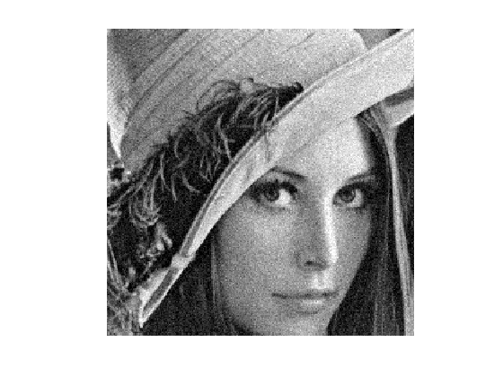
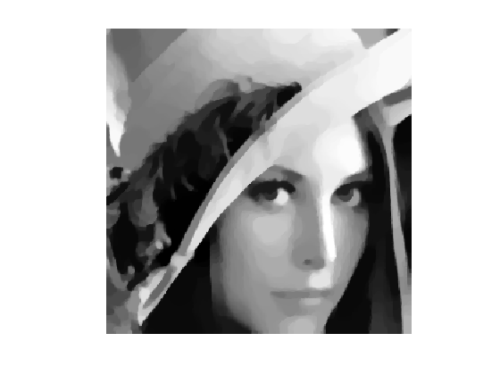
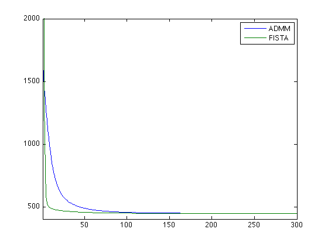

Total Variation Denoising
Test for Rudin-Osher-Fatemi denoising (ROF) using FB-like method.
addpath('../'); addpath('../toolbox/');
Load image.
n = 256;
y = load_image('lena',n*2);
y = rescale(crop(y,n));
y = y + randn(n)*.06;
Display it.
clf; imageplot(clamp(y));
We aim at minimising:
min_x 1/2*norm(y-x,'fro')^2 + lambda*norm(K(x),1)
Regularization parameter.
lambda = .2;
where K is a vectorial gradient and norm(u,1) is a vectorial L1 norme.
K = @(x)grad(x); KS = @(x)-div(x);
It can be put as the minimization of F(K*x) + G(x)
Amplitude = @(u)sqrt(sum(u.^2,3));
F = @(u)lambda*sum(sum(Amplitude(u)));
G = @(x)1/2*norm(y-x,'fro')^2;
The proximity operator of F is the vectorial soft thresholding.
Normalize = @(u)u./repmat( max(Amplitude(u),1e-10), [1 1 2] ); ProxF = @(u,tau)repmat( perform_soft_thresholding(Amplitude(u),lambda*tau), [1 1 2]).*Normalize(u); ProxFS = compute_dual_prox(ProxF);
The proximity operator of G.
ProxG = @(x,tau)(x+tau*y)/(1+tau);
Function to record progression of the functional.
options.report = @(x)G(x) + F(K(x));
Run the ADMM algorihtm.
options.niter = 300; [xAdmm,EAdmm] = perform_admm(y, K, KS, ProxFS, ProxG, options);
[********************]
Display image.
clf; imageplot(xAdmm);
Since the functional to mimize is stricly convex, we can use a FB scheme on the dual problem.
GradGS = @(x)x+y;
L = 8;
options.method = 'fista';
[xFista,EFista] = perform_fb_strongly(y, K, KS, GradGS, ProxFS, L, options);
[********************]
Compare the energy decays.
clf; plot([EAdmm(:) EFista(:)]); axis tight; legend('ADMM', 'FISTA'); axis([1 length(EAdmm) EFista(end)*.9 2000]);